トウガンの花が目立っていました。
2012/10/06
桃の木の上で、トウガンの花が咲いています。
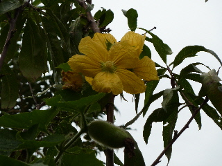
大きい花なので、とっても目立っていました。
地上3ｍ位の場所で咲いています。トウガンの勢いて凄いですね。
2012/10/06
桃の木の上で、トウガンの花が咲いています。

大きい花なので、とっても目立っていました。
地上3ｍ位の場所で咲いています。トウガンの勢いて凄いですね。
2012/10/06
里芋を掘りました。
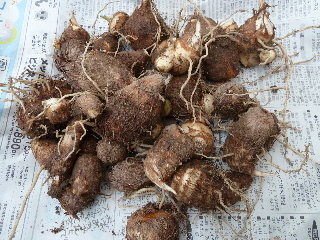
ちょっと小さいかな。食べやすい大きさでいいんですけど。
2012/10/06
ちょっと固いお豆さんのモロッコ豆です。
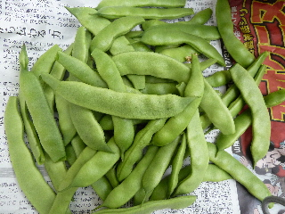
あまり料理の仕方を知らないので、ネットで調べようかな。
2012/10/13
今年は柿が豊作な気がする。
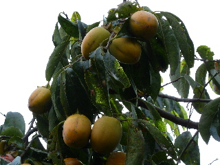
合わせ柿が沢山食べれそうです。
2012/10/13
秋になってだいぶ寒くなりましたが、トマトが大量に出来ています。
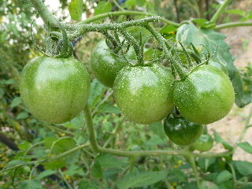
でもみんな青いです。
色が付くかな？美味しく食べれるといいんですが、その前に寒さで枯れちゃうかな？
2012/10/21
ムカゴがぽろぽろと落ちるようになったので、収穫しました。
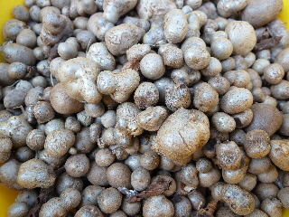
自然の生えているんですが、こんなに採れるんなら、来年はちゃんと育てようかな？なんて考えています。
2012/10/21
枝豆です。
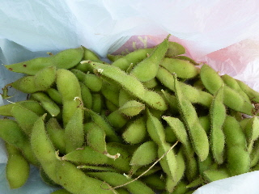
黒豆なんですけど、早めに収穫しちゃうと枝豆です。
枝豆用に作っていないんですが、枝豆で食べても美味しいですね。
2012/10/27
今頃がピークなのかな。
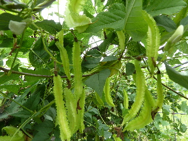
シカク豆が沢山出来ています。
夏には少ししか採れなくて、もう来年は作らない！って思ってたんですが、こんだけ沢山出来ると、来年も作ろうかなーって思いますね。
2012/10/27
柿が食べれるようになりました。
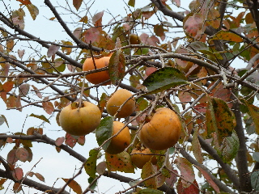
秋ですねー。
この柿の木は紅葉が早いみたいで、陽が当たるととっても綺麗でした。
この柿の木を増やしたいな。
2012/10/27
この木はみかんの実が小さいせいか、もう色付いてました。
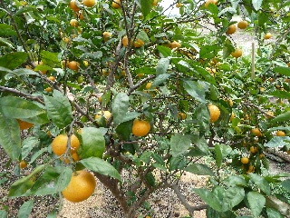
食べたら甘いので収穫しました。
同じ温州みかんがもう１本あるんですが、そっちはまだ青いです。
こんなに早くミカンが採れたことなかったので、木の調子が悪いのかもしれないです。
2012/10/27
まだ青い実があるのでもうちょっとですね。
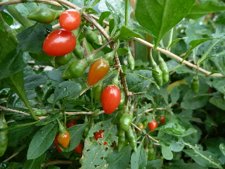
どうやって食べるとおいしいかな？
なかなか使い方を思いつかないんですよね。
今度検索します。
畑仕事じゃないよ。